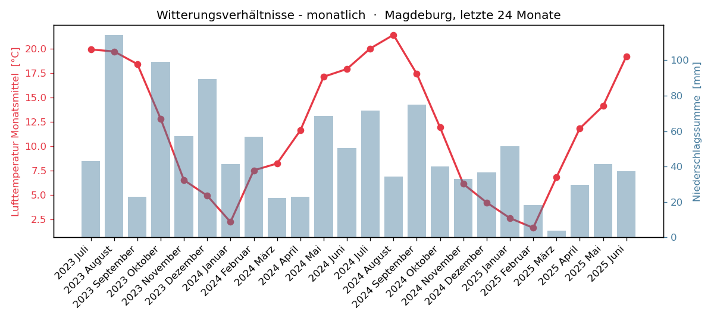

Beide Visualisierungen lesen denselben Datensatz aus
../wetter/witterungsverhaeltnisse-monatlich.json. Quellcode:
examples/web/index.html bzw. examples/python/plot.py.
Schema der JSON-Dateien: siehe ../README.md.